About database transactions and their properties
About database transactions and their properties10 TRANSACTION MANAGEMENT AND CONCURRENCY CONTROL
In this chapter, you will learn:
About database transactions and their properties
What concurrency control is and what role it plays in maintaining the database’s integrity
What locking methods are and how they work
How stamping methods are used for concurrency control
How optimistic methods are used for concurrency control
How database recovery management is used to maintain database integrity
Preview
Database transactions reflect real-world transactions that are triggered by events such as buying a product, registering for a course, or making a deposit in a checking account. Transactions are likely to contain many parts. For example, a sales transaction might require updating the customer’s account, adjusting the product inventory, and updating the seller’s accounts receivable. All parts of a transaction must be successfully completed to prevent data integrity problems. Therefore, executing and managing transactions are important database system activities.
The main database transaction properties are atomicity, consistency, isolation, and durability. In addition, serializability is a characteristic of the schedule of operations for executing concurrent transactions. After defining the transaction properties, the chapter shows how SQL can be used to represent transactions and how transaction logs can ensure the DBMS’s ability to recover transactions.
When many transactions take place at the same time, they are called concurrent transactions. Managing the execution of such transactions is called concurrency control. As you can imagine, concurrency control is especially important in a multiuser database environment. Just imagine the number of transactions routinely handled by companies that conduct sales and provide services via the Web! This chapter discusses some of the problems that can occur with concurrent transactions—lost updates, uncommitted data, and inconsistent retrievals. You will discover that such problems can be solved when a DBMS scheduler enforces concurrency control.
In this chapter you will learn about the most common algorithms for concurrency control: locks, timestamping, and optimistic methods. Because locks are the most widely used method, you will examine various levels and types of locks. Locks can also create deadlocks, so you will learn about strategies for managing deadlocks.
Database contents can be damaged or destroyed by critical operation errors, including transaction management failures. Therefore, this chapter also explains how database recovery management maintains a database’s contents.
To illustrate what transactions are and how they work, use the Ch10_SaleCo database. The relational diagram for the database is shown in Figure 10.1.
FIGURE 10.1 The Ch10_SaleCo database relational diagram
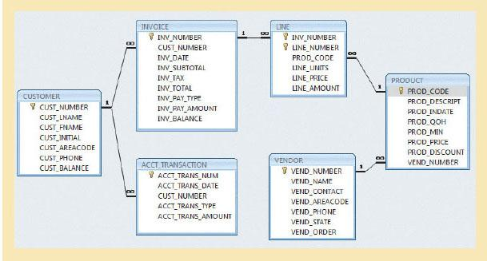
SOURCE: Course Technology/Cengage Learning
 ONLINE CONTENT
ONLINE CONTENT
The Ch10_SaleCo database used to illustrate the material in this chapter is available at www.cengagebrain.com.
NOTE
Although SQL commands illustrate several transaction and concurrency control issues, you should be able to follow the discussions even if you have not studied Chapter 7, Introduction to Structured Query Language (SQL), and Chapter 8, Advanced SQL. If you don’t know SQL, ignore the SQL commands and focus on the discussions. If you have a working knowledge of SQL, you can use the Ch10_SaleCo database to generate your own SELECT and UPDATE examples and to augment the material in Chapters 7 and 8 by writing your own triggers and stored procedures.
As you examine the relational diagram in Figure 10.1, note the following features:
• The design stores the customer balance (CUST_BALANCE) value in the CUSTOMER table to indicate the total amount owed by the customer. The CUST_BALANCE attribute is increased when the customer makes a purchase on credit, and it is decreased when the customer makes a payment. Including the current customer account balance in the CUSTOMER table makes it easy to write a query to determine the current balance for any customer and to generate important summaries such as total, average, minimum, and maximum balances.
• The ACCT_TRANSACTION table records all customer purchases and payments to track the details of customer account activity.
You could change the design of the Ch10_SaleCo database to reflect accounting practice more precisely, but the implementation provided here will enable you to track the transactions well enough to understand the chapter’s discussions.
To understand the concept of a transaction, suppose that you sell a product to a customer. Furthermore, suppose that the customer may charge the purchase to his or her account. Given that scenario, your sales transaction consists of at least the following parts:
• You must write a new customer invoice.
• You must reduce the quantity on hand in the product’s inventory.
• You must update the account transactions.
• You must update the customer balance.
The preceding sales transaction must be reflected in the database. In database terms, a transaction is any action that reads from or writes to a database. A transaction may consist of the following:
• A simple SELECT statement to generate a list of table contents
• A series of related UPDATE statements to change the values of attributes in various tables
• A series of INSERT statements to add rows to one or more tables
• A combination of SELECT, UPDATE, and INSERT statements
The sales transaction example includes a combination of INSERT and UPDATE statements.
Given the preceding discussion, you can augment the definition of a transaction. A transaction is a logical unit of work that must be entirely completed or entirely aborted; no intermediate states are acceptable. In other words, a multicomponent transaction, such as the previously mentioned sale, must not be partially completed. Updating only the inventory or only the accounts receivable is not acceptable. All of the SQL statements in the transaction must be completed successfully. If any of the SQL statements fail, the entire transaction is rolled back to the original database state that existed before the transaction started. A successful transaction changes the database from one consistent state to another. A consistent database state is one in which all data integrity constraints are satisfied.
To ensure consistency of the database, every transaction must begin with the database in a known consistent state. If the database is not in a consistent state, the transaction will yield an inconsistent database that violates its integrity and business rules. For that reason, subject to limitations discussed later, all transactions are controlled and executed by the DBMS to guarantee database integrity.
Most real-world database transactions are formed by two or more database requests. A database request is the equivalent of a single SQL statement in an application program or transaction. For example, if a transaction is composed of two UPDATE statements and one INSERT statement, the transaction uses three database requests. In turn, each database request generates several input/output (I/O) operations that read from or write to physical storage media.
10.1.1 EVALUATING TRANSACTION RESULTS
Not all transactions update the database. Suppose that you want to examine the CUSTOMER table to determine the current balance for customer number 10016. Such a transaction can be completed by using the following SQL code:
SELECT CUST_NUMBER, CUST_BALANCE
FROM CUSTOMER
WHERE CUST_NUMBER = 10016;
Although the query does not make any changes in the CUSTOMER table, the SQL code represents a transaction because it accesses the database. If the database existed in a consistent state before the access, the database remains in a consistent state after the access because the transaction did not alter the database.
Remember that a transaction may consist of a single SQL statement or a collection of related SQL statements. Revisit the previous sales example to illustrate a more complex transaction, using the Ch10_SaleCo database. Suppose that on January 18, 2012, you register the credit sale of one unit of product 89-WRE-Q to customer 10016 for $277.55. The required transaction affects the INVOICE, LINE, PRODUCT, CUSTOMER, and ACCT_TRANSACTION tables. The SQL statements that represent this transaction are as follows:
INSERT INTO INVOICE
VALUES (1009, 10016,'18-Jan-2012', 256.99, 20.56, 277.55, 'cred', 0.00, 277.55);
INSERT INTO LINE
VALUES (1009, 1, '89-WRE-Q', 1, 256.99, 256.99);
UPDATE | PRODUCT |
SET | PROD_QOH = PROD_QOH – 1 |
WHERE | PROD_CODE = '89-WRE-Q'; |
| |
UPDATE | CUSTOMER |
SET | CUST_BALANCE = CUST_BALANCE + 277.55 |
WHERE | CUST_NUMBER = 10016; |
INSERT INTO ACCT_TRANSACTION
VALUES (10007, '18-Jan-12', 10016, 'charge', 277.55);
COMMIT;
The results of the successfully completed transaction are shown in Figure 10.2. (All records involved in the transaction are outlined in red.)
To better understand the transaction results, note the following:
• A new row 1009 was added to the INVOICE table. In this row, derived attribute values were stored for the invoice subtotal, the tax, the invoice total, and the invoice balance.
• The LINE row for invoice 1009 was added to reflect the purchase of one unit of product 89-WRE-Q with a price of $256.99. In this row, the derived attribute values for the line amount were stored.
• Product 89-WRE-Q’s quantity on hand (PROD_QOH) in the PRODUCT table was reduced by one, from 12 to 11.
• The customer balance (CUST_BALANCE) for customer 10016 was updated by adding $277.55 to the existing balance (the initial value was $0.00).
• A new row was added to the ACCT_TRANSACTION table to reflect the new account transaction number 10007.
• The COMMIT statement was used to end a successful transaction. (See Section 10.1.3.)
Now suppose that the DBMS completes the first three SQL statements. Furthermore, suppose that during the execution of the fourth statement (the UPDATE of the CUSTOMER table’s CUST_BALANCE value for customer 10016), the computer system loses electrical power. If the computer does not have a backup power supply, the transaction cannot be completed. Therefore, the INVOICE and LINE rows were added, and the PRODUCT table was updated to represent the sale of product 89-WRE-Q, but customer 10016 was not charged, nor was the required record written in the ACCT_TRANSACTION table. The database is now in an inconsistent state, and it is not usable for subsequent transactions. Assuming that the DBMS supports transaction management, the DBMS will roll back the database to a previous consistent state
FIGURE 10.2 Tracing the transaction in the Ch10_SaleCo database
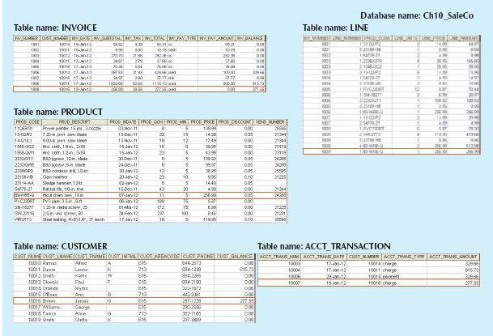
SOURCE: Course Technology/Cengage Learning
NOTE
By default, MS Access does not support transaction management as discussed here. More sophisticated DBMSs, such as Oracle, SQL Server, and DB2, support the transaction management components discussed in this chapter.
Although the DBMS is designed to recover a database to a previous consistent state when an interruption prevents the completion of a transaction, the transaction itself is defined by the end user or programmer and must be semantically correct. The DBMS cannot guarantee that the semantic meaning of the transaction truly represents the real-world event. For example, suppose that following the sale of 10 units of product 89-WRE-Q, the inventory UPDATE commands were written this way:
UPDATE PRODUCT
SET PROD_QOH = PROD_QOH + 10
WHERE PROD_CODE = '89-WRE-Q';
The sale should have decreased the PROD_QOH value for product 89-WRE-Q by 10. Instead, the UPDATE added 10 to product 89-WRE-Q’s PROD_QOH value.
Although the UPDATE command’s syntax is correct, its use yields incorrect results. Yet, the DBMS will execute the transaction anyway. The DBMS cannot evaluate whether the transaction represents the real-world event correctly; that is the end user’s responsibility. End users and programmers are capable of introducing many errors in this fashion. Imagine the consequences of reducing the quantity on hand for product 1546-QQ2 instead of product 89-WRE-Q, or of crediting the CUST_BALANCE value for customer 10012 rather than customer 10016.
Clearly, improper or incomplete transactions can have a devastating effect on database integrity. Some DBMSs—especially the relational variety—provide means by which the user can define enforceable constraints based on business rules. Other integrity rules, such as those governing referential and entity integrity, are enforced automatically by the DBMS when the table structures are properly defined, thereby letting the DBMS validate some transactions. For example, if a transaction inserts a new customer number into a customer table and the number already exists, the DBMS will end the transaction with an error code to indicate a violation of the primary key integrity rule.
Each individual transaction must display atomicity, consistency, isolation, and durability. These properties are sometimes referred to as the ACID test. In addition, when executing multiple transactions, the DBMS must schedule the concurrent execution of the transaction’s operations. The schedule of such transaction operations must exhibit the property of serializability. Look briefly at each of the properties.
• Atomicity requires that all operations (SQL requests) of a transaction be completed; if not, the transaction is aborted. If a transaction T1 has four SQL requests, all four requests must be successfully completed; otherwise, the entire transaction is aborted. In other words, a transaction is treated as a single, indivisible, logical unit of work.
• Consistency indicates the permanence of the database’s consistent state. A transaction takes a database from one consistent state to another. When a transaction is completed, the database must be in a consistent state; if any of the transaction parts violates an integrity constraint, the entire transaction is aborted.
• Isolation means that the data used during the execution of a transaction cannot be used by a second transaction until the first one is completed. In other words, if transaction T1 is being executed and is using the data item X, that data item cannot be accessed by any other transaction (T2 ... Tn) until T1 ends. This property is particularly useful in multiuser database environments because several users can access and update the database at the same time.
• Durability ensures that once transaction changes are done and committed, they cannot be undone or lost, even in the event of a system failure.
• Serializability ensures that the schedule for the concurrent execution of the transactions yields consistent results. This property is important in multiuser and distributed databases in which multiple transactions are likely to be executed concurrently. Naturally, if only a single transaction is executed, serializability is not an issue.
A single-user database system automatically ensures serializability and isolation of the database because only one transaction is executed at a time. The atomicity, consistency, and durability of transactions must be guaranteed by single-user DBMSs. (Even a single-user DBMS must manage recovery from errors created by OS-induced interruptions, power interruptions, and improper application execution.)
Multiuser databases are typically subject to multiple concurrent transactions. Therefore, the multiuser DBMS must implement controls to ensure serializability and isolation of transactions—in addition to atomicity and durability—to guard the database’s consistency and integrity. For example, if several concurrent transactions are executed over the same data set and the second transaction updates the database before the first transaction is finished, the isolation property is violated and the database is no longer consistent. The DBMS must manage the transactions by using concurrency control techniques to avoid undesirable situations.
10.1.3 TRANSACTION MANAGEMENT WITH SQL
The American National Standards Institute (ANSI) has defined standards that govern SQL database transactions. Transaction support is provided by two SQL statements: COMMIT and ROLLBACK. The ANSI standards require that when a transaction sequence is initiated by a user or an application program, the sequence must continue through all succeeding SQL statements until one of the following four events occurs:
• A COMMIT statement is reached, in which case all changes are permanently recorded within the database. The COMMIT statement automatically ends the SQL transaction.
• A ROLLBACK statement is reached, in which case all changes are aborted and the database is rolled back to its previous consistent state.
• The end of a program is successfully reached, in which case all changes are permanently recorded within the database. This action is equivalent to COMMIT.
• The program is abnormally terminated, in which case the database changes are aborted and the database is rolled back to its previous consistent state. This action is equivalent to ROLLBACK.
The use of COMMIT is illustrated in the following simplified sales example, which updates a product’s quantity on hand (PROD_QOH) and the customer’s balance when the customer buys two units of product 1558-QW1 priced at $43.99 per unit (for a total of $87.98) and charges the purchase to the customer’s account:
UPDATE | PRODUCT |
SET | PROD_QOH = PROD_QOH – 2 |
WHERE | PROD_CODE = '1558-QW1'; |
UPDATE | CUSTOMER |
SET | CUST_BALANCE = CUST_BALANCE + 87.98 |
WHERE | CUST_NUMBER = '10011'; |
COMMIT; |
(Note that the example is simplified to make it easy to trace the transaction. In the Ch10_SaleCo database, the transaction would involve several additional table updates.)
The COMMIT statement used in the preceding example is not necessary if the UPDATE statement is the application’s last action and the application terminates normally. However, good programming practice dictates that you include the COMMIT statement at the end of a transaction declaration.
A transaction begins implicitly when the first SQL statement is encountered. Not all SQL implementations follow the ANSI standard; some (such as SQL Server) use transaction management statements such as the following to indicate the beginning of a new transaction:
BEGIN TRANSACTION;
Other SQL implementations allow you to assign characteristics for the transactions as parameters to the BEGIN statement. For example, the Oracle RDBMS uses the SET TRANSACTION statement to declare the start of a new transaction and its properties.
A DBMS uses a transaction log to keep track of all transactions that update the database. The DBMS uses the information stored in this log for a recovery requirement triggered by a ROLLBACK statement, a program’s abnormal termination, or a system failure such as a network discrepancy or a disk crash. Some RDBMSs use the transaction log to recover a database forward to a currently consistent state. After a server failure, for example, Oracle automatically rolls back uncommitted transactions and rolls forward transactions that were committed but not yet written to the physical database. This behavior is required for transactional correctness and is typical of any transactional DBMS.
While the DBMS executes transactions that modify the database, it also automatically updates the transaction log. The transaction log stores the following:
• A record for the beginning of the transaction
• For each transaction component (SQL statement):
- The type of operation being performed (INSERT, UPDATE, DELETE)
- The names of the objects affected by the transaction (the name of the table)
- The “before” and “after” values for the fields being updated
- Pointers to the previous and next transaction log entries for the same transaction
• The ending (COMMIT) of the transaction
Although using a transaction log increases the processing overhead of a DBMS, the ability to restore a corrupted database is worth the price.
Table 10.1 illustrates a simplified transaction log that reflects a basic transaction composed of two SQL UPDATE statements. If a system failure occurs, the DBMS will examine the transaction log for all uncommitted or incomplete transactions and restore (ROLLBACK) the database to its previous state on the basis of that information. When the recovery process is completed, the DBMS will write in the log all committed transactions that were not physically written to the database before the failure occurred.
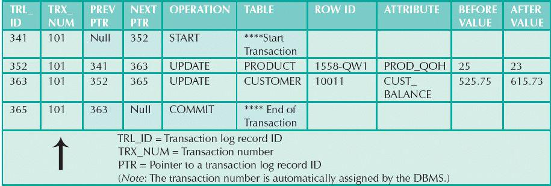
If a ROLLBACK is issued before the termination of a transaction, the DBMS will restore the database only for that particular transaction, rather than for all of them, to maintain the durability of the previous transactions. In other words, committed transactions are not rolled back.
The transaction log is a critical part of the database, and it is usually implemented as one or more files that are managed separately from the actual database files. The transaction log is subject to common dangers such as disk-full conditions and disk crashes. Because the transaction log contains some of the most critical data in a DBMS, some implementations support logs on several different disks to reduce the consequences of a system failure.
Coordinating the simultaneous execution of transactions in a multiuser database system is known as concurrency control. The objective of concurrency control is to ensure the serializability of transactions in a multiuser environment. Concurrency control is important because the simultaneous execution of transactions over a shared database can create several data integrity and consistency problems. The three main problems are lost updates, uncommitted data, and inconsistent retrievals.
The lost update problem occurs when two concurrent transactions, T1 and T2, are updating the same data element and one of the updates is lost (overwritten by the other transaction). To see an illustration of lost updates, examine a simple PRODUCT table. One of the table’s attributes is a product’s quantity on hand (PROD_QOH). Assume that you have a product whose current PROD_QOH value is 35. Also assume that two concurrent transactions, T1 and T2, occur and update the PROD_QOH value for some item in the PRODUCT table. The transactions are shown in Table 10.2.
Table 10.2 Two Concurrent Transactions to Update QOH
TRANSACTION |
COMPUTATION |
T1: Purchase 100 units | PROD_QOH = PROD_QOH + 100 |
T2: Sell 30 units | PROD_QOH = PROD_QOH – 30 |
Table 10.3 shows the serial execution of the transactions under normal circumstances, yielding the correct answer PROD_QOH = 105.
TABLE 10.3 Serial Execution of Two Transactions
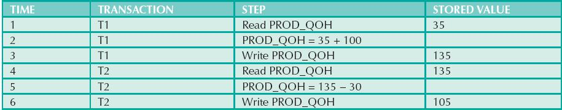
However, suppose that a transaction can read a product’s PROD_QOH value from the table before a previous transaction has been committed, using the same product. The sequence depicted in Table 10.4 shows how the lost update problem can arise. Note that the first transaction (T1) has not yet been committed when the second transaction (T2) is executed. Therefore, T2 still operates on the value 35, and its subtraction yields 5 in memory. In the meantime, T1 writes the value 135 to disk, which is promptly overwritten by T2. In short, the addition of 100 units is “lost” during the process.
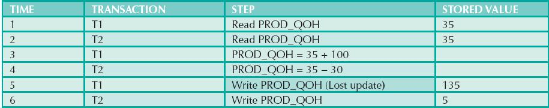
The phenomenon of uncommitted data occurs when two transactions, T1 and T2, are executed concurrently and the first transaction (T1) is rolled back after the second transaction (T2) has already accessed the uncommitted data—thus violating the isolation property of transactions. To illustrate that possibility, use the same transactions described during the lost updates discussion. T1 has two atomic parts, one of which is the update of the inventory; the other possible part is the update of the invoice total (not shown). T1 is forced to roll back due to an error during the updating of the invoice’s total; it rolls back all the way, undoing the inventory update as well. This time the T1 transaction is rolled back to eliminate the addition of the 100 units. (See Table 10.5.) Because T2 subtracts 30 from the original 35 units, the correct answer should be 5.
TABLE 10.5 Transactions Creating an Uncommitted Data Problem
TRANSACTION | COMPUTATION |
T1: Purchase 100 units | PROD_QOH = PROD_QOH + 100 (Rolled back) |
T2: Sell 30 units | PROD_QOH = PROD_QOH – 30 |
Table 10.6 shows how the serial execution of these transactions yields the correct answer under normal circumstances.
TABLE 10.6 Correct Execution of Two Transactions
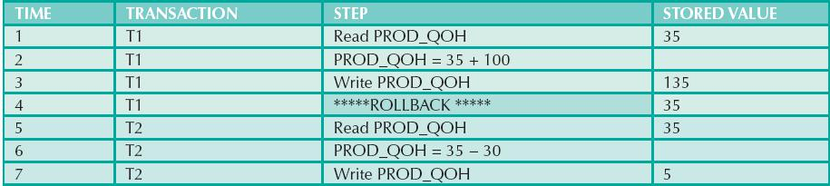
Table 10.7 shows how the uncommitted data problem can arise when the ROLLBACK is completed after T2 has begun its execution.
TABLE 10.7 An Uncommitted Data Problem
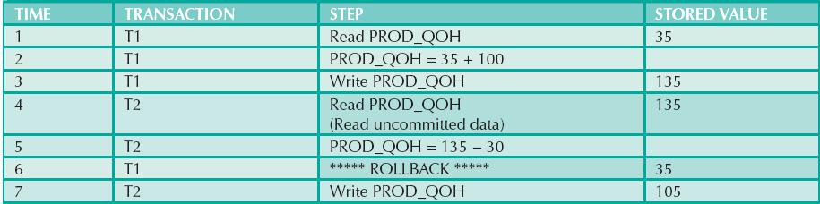
10.2.3 INCONSISTENT RETRIEVALS
Inconsistent retrievals occur when a transaction accesses data before and after one or more other transactions finish working with such data. For example, an inconsistent retrieval would occur if transaction T1 calculated some summary (aggregate) function over a set of data while another transaction (T2) was updating the same data. The problem is that the transaction might read some data before they are changed and other data after they are changed, thereby yielding inconsistent results.
To illustrate the problem, assume the following conditions:
1. T1 calculates the total quantity on hand of the products stored in the PRODUCT table.
2. At the same time, T2 updates the quantity on hand (PROD_QOH) for two of the PRODUCT table’s products.
The two transactions are shown in Table 10.8.
TABLE 10.8 Retrieval During Update
TRANSACTION T1 | TRANSACTION T2 |
SELECT SUM(PROD_QOH) | UPDATE PRODUCT |
FROM PRODUCT | SET PROD_QOH = PROD_QOH + 10 |
WHERE PROD_CODE = 1546-QQ2 | |
UPDATE PRODUCT | |
SET PROD_QOH = PROD_QOH – 10 | |
WHERE PROD_CODE = 1558-QW1 | |
COMMIT; |
While T1 calculates the total quantity on hand (PROD_QOH) for all items, T2 represents the correction of a typing error: the user added 10 units to product 1558-QW1’s PROD_QOH but meant to add the 10 units to product 1546-QQ2’s PROD_QOH. To correct the problem, the user adds 10 to product 1546-QQ2’s PROD_QOH and subtracts 10 from product 1558-QW1’s PROD_QOH. (See the two UPDATE statements in Table 10.8.) The initial and final PROD_QOH values are reflected in Table 10.9. (Only a few PROD_CODE values are shown for the PRODUCT table. To illustrate the point, the sum for the PROD_QOH values is shown for these few products.)
TABLE 10.9 Transaction Results: Data Entry Correction
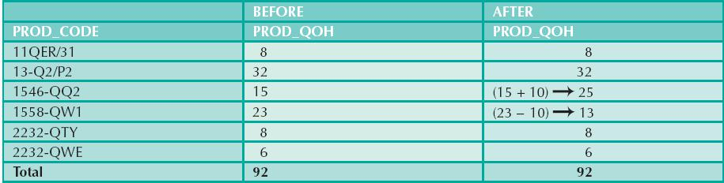
Although the final results shown in Table 10.9 are correct after the adjustment, Table 10.10 demonstrates that inconsistent retrievals are possible during the transaction execution, making the result of T1’s execution incorrect. The “After” summation shown in Table 10.10 reflects that the value of 25 for product 1546-QQ2 was read after the WRITE statement was completed. Therefore, the “After” total is 40 + 25 = 65. The “Before” total reflects that the value of 23 for product 1558-QW1 was read before the next WRITE statement was completed to reflect the corrected update of 13. Therefore, the “Before” total is 65 + 23 = 88.
TABLE 10.10 Inconsistent Retrievals
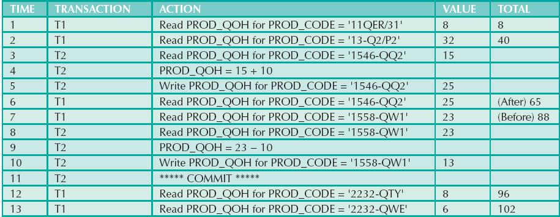
The computed answer of 102 is obviously wrong because you know from Table 10.9 that the correct answer is 92. Unless the DBMS exercises concurrency control, a multiuser database environment can create havoc within the information system.
You now know that severe problems can arise when two or more concurrent transactions are executed. You also know that a database transaction involves a series of database I/O operations that take the database from one consistent state to another. Finally, you know that database consistency can be ensured only before and after the execution of transactions. A database always moves through an unavoidable temporary state of inconsistency during a transaction’s execution if such a transaction updates multiple tables and rows. (If the transaction contains only one update, then there is no temporary inconsistency.) The temporary inconsistency exists because a computer executes the operations serially, one after another. During this serial process, the isolation property of transactions prevents them from accessing the data not yet released by other transactions. This consideration is even more important today, with the use of multicore processors that can execute several instructions at the same time. What would happen if two transactions executed concurrently and they were accessing the same data?
In previous examples, the operations within a transaction were executed in an arbitrary order. As long as two transactions, T1 and T2, access unrelated data, there is no conflict and the order of execution is irrelevant to the final outcome. However, if the transactions operate on related data or the same data, conflict is possible among the transaction components and the selection of one execution order over another might have some undesirable consequences. So, how is the correct order determined, and who determines that order? Fortunately, the DBMS handles that tricky assignment by using a built-in scheduler.
The scheduler is a special DBMS process that establishes the order in which the operations are executed within concurrent transactions. The scheduler interleaves the execution of database operations to ensure serializability and isolation of transactions. To determine the appropriate order, the scheduler bases its actions on concurrency control algorithms, such as locking or timestamping methods, which are explained in the next sections. However, it is important to understand that not all transactions are serializable. The DBMS determines what transactions are serializable and proceeds to interleave the execution of the transaction’s operations. Generally, transactions that are not serializable are executed on a first-come, first-served basis by the DBMS. The scheduler’s main job is to create a serializable schedule of a transaction’s operations, in which the interleaved execution of the transactions (T1, T2, T3, etc.) yields the same results as if the transactions were executed in serial order (one after another).
The scheduler also makes sure that the computer’s central processing unit (CPU) and storage systems are used efficiently. If there were no way to schedule the execution of transactions, all of them would be executed on a first-come, first-served basis. The problem with that approach is that processing time is wasted when the CPU waits for a READ or WRITE operation to finish, thereby losing several CPU cycles. In short, first-come, first-served scheduling tends to yield unacceptable response times within the multiuser DBMS environment. Therefore, some other scheduling method is needed to improve the efficiency of the overall system.
Additionally, the scheduler facilitates data isolation to ensure that two transactions do not update the same data element at the same time. Database operations might require READ and/or WRITE actions that produce conflicts. For example, Table 10.11 shows the possible conflict scenarios when two transactions, T1 and T2, are executed concurrently over the same data. Note that in Table 10.11, two operations are in conflict when they access the same data and at least one of them is a WRITE operation.
TABLE 10.11 Read/Write Conflict Scenarios: Conflicting Database Operations Matrix
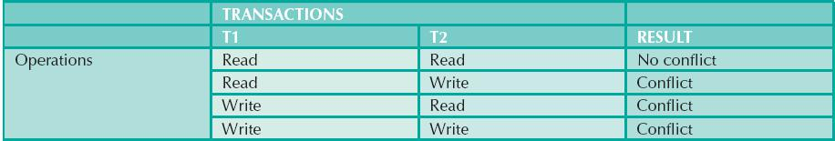
Several methods have been proposed to schedule the execution of conflicting operations in concurrent transactions. These methods are classified as locking, timestamping, and optimistic. Locking methods, discussed next, are used most frequently.
10.3 CONCURRENCY CONTROL WITH LOCKING METHODS
A lock guarantees exclusive use of a data item to a current transaction. In other words, transaction T2 does not have access to a data item that is currently being used by transaction T1. A transaction acquires a lock prior to data access; the lock is released (unlocked) when the transaction is completed so that another transaction can lock the data item for its exclusive use. This series of locking actions assumes that concurrent transactions might attempt to manipulate the same data item at the same time. The use of locks based on the assumption that conflict between transactions is likely is often referred to as pessimistic locking.
Recall from Sections 10.1.1 and 10.1.2 that data consistency cannot be guaranteed during a transaction; the database might be in a temporary inconsistent state when several updates are executed. Therefore, locks are required to prevent another transaction from reading inconsistent data.
Most multiuser DBMSs automatically initiate and enforce locking procedures. All lock information is handled by a lock manager, which is responsible for assigning and policing the locks used by the transactions.
Lock granularity indicates the level of lock use. Locking can take place at the following levels: database, table, page, row, or even field (attribute).
Database Level
In a database-level lock, the entire database is locked, thus preventing the use of any tables in the database by transaction T2 while transaction T1 is being executed. This level of locking is good for batch processes, but it is unsuitable for multiuser DBMSs. You can imagine how s-l-o-w data access would be if thousands of transactions had to wait for the previous transaction to be completed before the next one could reserve the entire database. Figure 10.3 illustrates the database-level lock; because of it, transactions T1 and T2 cannot access the same database concurrently even when they use different tables.
FIGURE 10.3 Database-level locking sequence
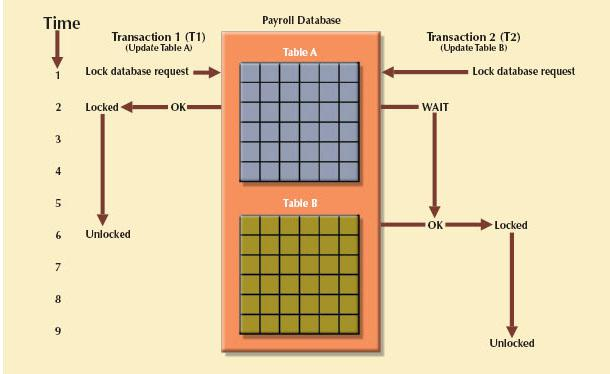
SOURCE: Course Technology/Cengage Learning
Table Level
In a table-level lock, the entire table is locked, preventing access to any row by transaction T2 while transaction T1 is using the table. If a transaction requires access to several tables, each table may be locked. However, two transactions can access the same database as long as they access different tables.
Table-level locks, while less restrictive than database-level locks, cause traffic jams when many transactions are waiting to access the same table. Such a condition is especially irksome if the lock forces a delay when different transactions require access to different parts of the same table—that is, when the transactions would not interfere with each other. Consequently, table-level locks are not suitable for multiuser DBMSs. Figure 10.4 illustrates the effect of a table-level lock. Note that transactions T1 and T2 cannot access the same table even when they try to use different rows; T2 must wait until T1 unlocks the table.
FIGURE 10.4 An example of a table-level lock
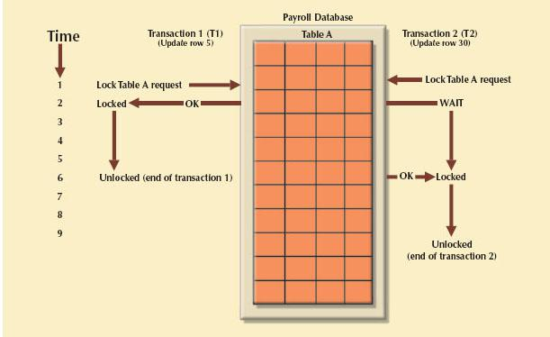
SOURCE: Course Technology/Cengage Learning
Page Level
In a page-level lock, the DBMS locks an entire diskpage. A diskpage, or page, is the equivalent of a diskblock, which can be described as a directly addressable section of a disk. A page has a fixed size, such as 4K, 8K, or 16K. For example, if you want to write only 73 bytes to a 4K page, the entire 4K page must be read from disk, updated in memory, and written back to disk. A table can span several pages, and a page can contain several rows of one or more tables. Page-level locks are currently the most frequently used locking method for multiuser DBMSs. An example of a page-level lock is shown in Figure 10.5. Note that T1 and T2 access the same table while locking different diskpages. If T2 requires the use of a row located on a page that is locked by T1, T2 must wait until T1 unlocks the page.
FIGURE 10.5 An example of a page-level lock
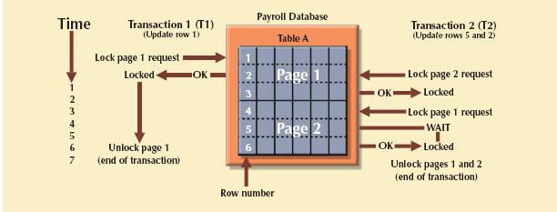
SOURCE: CourseTechnology/Cengage Learning
Row Level
A row-level lock is much less restrictive than the locks discussed earlier. The DBMS allows concurrent transactions to access different rows of the same table even when the rows are located on the same page. Although the row-level locking approach improves the availability of data, its management requires high overhead because a lock exists for each row in a table of the database involved in a conflicting transaction. Modern DBMSs automatically escalate a lock from a row level to a page level when the application session requests multiple locks on the same page. Figure 10.6 illustrates the use of a row-level lock.
FIGURE 10.6 An example of a row-level lock
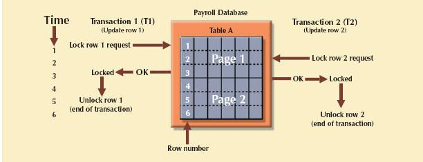
SOURCE: Course Technology/Cengage Learning
Note in Figure 10.6 that both transactions can execute concurrently, even when the requested rows are on the same page. T2 must wait only if it requests the same row as T1.
Field Level
The field-level lock allows concurrent transactions to access the same row as long as they require the use of different fields (attributes) within that row. Although field-level locking clearly yields the most flexible multiuser data access, it is rarely implemented in a DBMS because it requires an extremely high level of computer overhead and because the row-level lock is much more useful in practice.
Regardless of the level of locking, the DBMS may use different lock types: binary or shared/exclusive.
Binary Locks
A binary lock has only two states: locked (1) or unlocked (0). If an object such as a database, table, page, or row is locked by a transaction, no other transaction can use that object. If an object is unlocked, any transaction can lock the object for its use. Every database operation requires that the affected object be locked. As a rule, a transaction must unlock the object after its termination. Therefore, every transaction requires a lock and unlock operation for each accessed data item. Such operations are automatically managed and scheduled by the DBMS; the user does not lock or unlock data items. (Every DBMS has a default locking mechanism. If the end user wants to override the default settings, the LOCK TABLE command and other SQL commands are available for that purpose.)
The binary locking technique is illustrated in Table 10.12, using the lost update problem you encountered in Table 10.4. Note that the lock and unlock features eliminate the lost update problem because the lock is not released until the WRITE statement is completed. Therefore, a PROD_QOH value cannot be used until it has been properly updated. However, binary locks are now considered too restrictive to yield optimal concurrency conditions. For example, the DBMS will not allow two transactions to read the same database object even though neither transaction updates the database, and therefore no concurrency problems can occur. Remember from Table 10.11 that concurrency conflicts occur only when two transactions execute concurrently and one of them updates the database.
TABLE 10.12 An Example of a Binary Lock
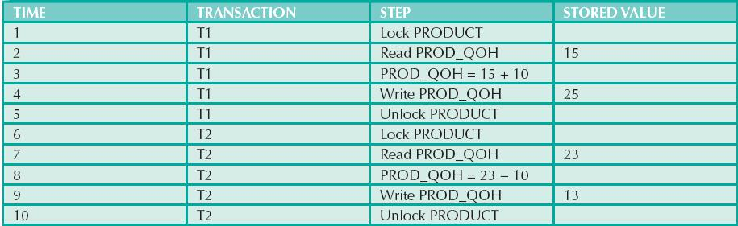
Shared/Exclusive Locks
An exclusive lock exists when access is reserved specifically for the transaction that locked the object. The exclusive lock must be used when the potential for conflict exists (see Table 10.11). A shared lock exists when concurrent transactions are granted read access on the basis of a common lock. A shared lock produces no conflict as long as all the concurrent transactions are read-only.
A shared lock is issued when a transaction wants to read data from the database and no exclusive lock is held on that data item. An exclusive lock is issued when a transaction wants to update (write) a data item and no locks are currently held on that data item by any other transaction. Using the shared/exclusive locking concept, a lock can have three states: unlocked, shared (read), and exclusive (write).
As shown in Table 10.11, two transactions conflict only when at least one is a write transaction. Because the two read transactions can be safely executed at once, shared locks allow several read transactions to read the same data item concurrently. For example, if transaction T1 has a shared lock on data item X and transaction T2 wants to read data item X, T2 may also obtain a shared lock on data item X.
If transaction T2 updates data item X, an exclusive lock is required by T2 over data item X. The exclusive lock is granted if and only if no other locks are held on the data item. Therefore, if a shared or exclusive lock is already held on data item X by transaction T1, an exclusive lock cannot be granted to transaction T2, and T2 must wait to begin until T1 commits. This condition is known as the mutual exclusive rule: only one transaction at a time can own an exclusive lock on an object.
Although the use of shared locks renders data access more efficient, a shared/exclusive lock schema increases the lock manager’s overhead for several reasons:
• The type of lock held must be known before a lock can be granted.
• Three lock operations exist: READ_LOCK to check the type of lock, WRITE_LOCK to issue the lock, and UNLOCK to release the lock.
• The schema has been enhanced to allow a lock upgrade from shared to exclusive and a lock downgrade from exclusive to shared.
Although locks prevent serious data inconsistencies, they can lead to two major problems:
• The resulting transaction schedule might not be serializable.
• The schedule might create deadlocks. A deadlock occurs when two transactions wait indefinitely for each other to unlock data. A database deadlock, which is similar to traffic gridlock in a big city, is caused when two or more transactions wait for each other to unlock data.
Fortunately, both problems can be managed: serializability is guaranteed through a locking protocol known as two-phase locking, and deadlocks can be managed by using deadlock detection and prevention techniques. Those techniques are examined in the next two sections.
10.3.3 TWO-PHASE LOCKING TO ENSURE SERIALIZABILITY
Two-phase locking defines how transactions acquire and relinquish locks. Two-phase locking guarantees serializability, but it does not prevent deadlocks. The two phases are:
1. A growing phase, in which a transaction acquires all required locks without unlocking any data. Once all locks have been acquired, the transaction is in its locked point.
2. A shrinking phase, in which a transaction releases all locks and cannot obtain a new lock.
The two-phase locking protocol is governed by the following rules:
• Two transactions cannot have conflicting locks.
• No unlock operation can precede a lock operation in the same transaction.
• No data are affected until all locks are obtained—that is, until the transaction is in its locked point.
Figure 10.7 depicts the two-phase locking protocol.
FIGURE 10.7 Two-phase locking protocol
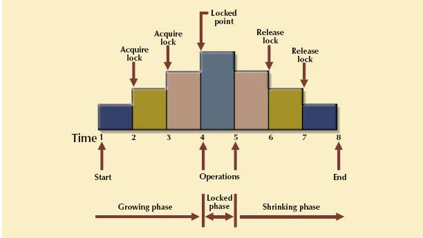
SOURCE: Course Technology/Cengage Learning
In this example, the transaction first acquires the two locks it needs. When it has the two locks, it reaches its locked point. Next, the data are modified to conform to the transaction’s requirements. Finally, the transaction is completed as it releases all of the locks it acquired in the first phase.
Two-phase locking increases the transaction processing cost and might cause additional undesirable effects, such as deadlocks.
A deadlock occurs when two transactions wait indefinitely for each other to unlock data. For example, a deadlock occurs when two transactions, T1 and T2, exist in the following mode:
T1 = access data items X and Y
T2 = access data items Y and X
If T1 has not unlocked data item Y, T2 cannot begin; if T2 has not unlocked data item X, T1 cannot continue. Consequently, T1 and T2 each wait for the other to unlock the required data item. Such a deadlock is also known as a deadly embrace. Table 10.13 demonstrates how a deadlock condition is created.
TABLE 10.13 How a Deadlock Condition Is Created
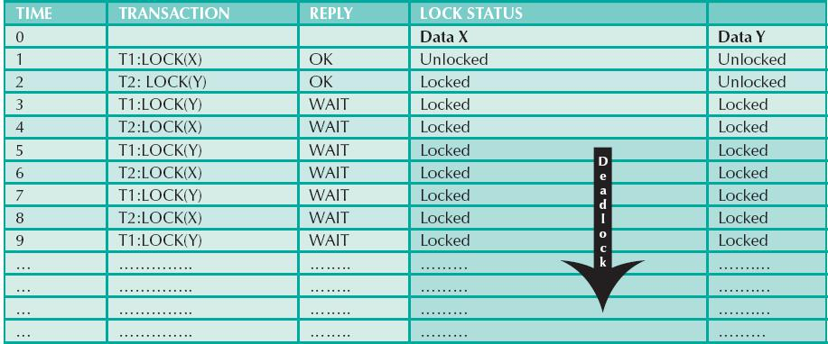
The preceding example used only two concurrent transactions to demonstrate a deadlock condition. In a real-world DBMS, many more transactions can be executed simultaneously, thereby increasing the probability of generating deadlocks. Note that deadlocks are possible only when one of the transactions wants to obtain an exclusive lock on a data item; no deadlock condition can exist among shared locks.
The three basic techniques to control deadlocks are:
• Deadlock prevention. A transaction requesting a new lock is aborted when there is the possibility that a deadlock can occur. If the transaction is aborted, all changes made by this transaction are rolled back and all locks obtained by the transaction are released. The transaction is then rescheduled for execution. Deadlock prevention works because it avoids the conditions that lead to deadlocking.
• Deadlock detection. The DBMS periodically tests the database for deadlocks. If a deadlock is found, the “victim” transaction is aborted (rolled back and restarted) and the other transaction continues.
• Deadlock avoidance. The transaction must obtain all of the locks it needs before it can be executed. This technique avoids the rolling back of conflicting transactions by requiring that locks be obtained in succession. However, the serial lock assignment required in deadlock avoidance increases action response times.
The choice of which deadlock control method to use depends on the database environment. For example, if the probability of deadlocks is low, deadlock detection is recommended. However, if the probability of deadlocks is high, deadlock prevention is recommended. If response time is not high on the system’s priority list, deadlock avoidance might be employed. All current DBMSs support deadlock detection in transactional databases, while some DBMSs use a blend of prevention and avoidance techniques for other types of data, such as data warehouses or XML data.
10.4 CONCURRENCY CONTROL WITH TIMESTAMPING METHODS
The timestamping approach to scheduling concurrent transactions assigns a global, unique timestamp to each transaction. The timestamp value produces an explicit order in which transactions are submitted to the DBMS. Timestamps must have two properties: uniqueness and monotonicity. Uniqueness ensures that no equal timestamp values can exist, and monotonicity1 ensures that timestamp values always increase.
All database operations (read and write) within the same transaction must have the same timestamp. The DBMS executes conflicting operations in timestamp order, thereby ensuring serializability of the transactions. If two transactions conflict, one is stopped, rolled back, rescheduled, and assigned a new timestamp value.
The disadvantage of the timestamping approach is that each value stored in the database requires two additional time-stamp fields: one for the last time the field was read and one for the last update. Timestamping thus increases memory needs and the database’s processing overhead. Timestamping demands a lot of system resources because many transactions might have to be stopped, rescheduled, and restamped.
10.4.1 WAIT/DIE AND WOUND/WAIT SCHEMES
Timestamping methods are used to manage concurrent transaction execution. In this section, you will learn about two schemes used to decide which transaction is rolled back and which continues executing: the wait/die scheme and the wound/wait scheme.2 An example illustrates the difference. Assume that you have two conflicting transactions: T1 and T2, each with a unique timestamp. Suppose that T1 has a timestamp of 11548789 and T2 has a timestamp of 19562545. You can deduce from the timestamps that T1 is the older transaction (the lower timestamp value) and T2 is the newer transaction. Given that scenario, the four possible outcomes are shown in Table 10.14.
TABLE 10.14 Wait/Die and Wound/Wait Concurrency Control Schemes
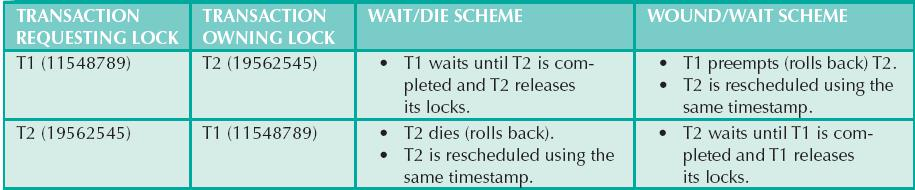
Using the wait/die scheme:
• If the transaction requesting the lock is the older of the two transactions, it will wait until the other transaction is completed and the locks are released.
• If the transaction requesting the lock is the younger of the two transactions, it will die (roll back) and is rescheduled using the same timestamp.
In short, in the wait/die scheme, the older transaction waits for the younger one to complete and release its locks.
In the wound/wait scheme:
• If the transaction requesting the lock is the older of the two transactions, it will preempt (wound) the younger transaction by rolling it back. T1 preempts T2 when T1 rolls back T2. The younger, preempted transaction is rescheduled using the same timestamp.
• If the transaction requesting the lock is the younger of the two transactions, it will wait until the other transaction is completed and the locks are released.
In short, in the wound/wait scheme, the older transaction rolls back the younger transaction and reschedules it.
In both schemes, one of the transactions waits for the other transaction to finish and release the locks. However, in many cases, a transaction requests multiple locks. How long does a transaction have to wait for each lock request? Obviously, that scenario can cause some transactions to wait indefinitely, causing a deadlock. To prevent a deadlock, each lock request has an associated time-out value. If the lock is not granted before the time-out expires, the transaction is rolled back.
10.5 CONCURRENCY CONTROL WITH OPTIMISTIC METHODS
The optimistic approach is based on the assumption that the majority of database operations do not conflict. The optimistic approach requires neither locking nor timestamping techniques. Instead, a transaction is executed without restrictions until it is committed. Using an optimistic approach, each transaction moves through two or three phases, referred to as read, validation, and write.3
• During the read phase, the transaction reads the database, executes the needed computations, and makes the updates to a private copy of the database values. All update operations of the transaction are recorded in a temporary update file, which is not accessed by the remaining transactions.
• During the validation phase, the transaction is validated to ensure that the changes made will not affect the integrity and consistency of the database. If the validation test is positive, the transaction goes to the write phase. If the validation test is negative, the transaction is restarted and the changes are discarded.
• During the write phase, the changes are permanently applied to the database.
The optimistic approach is acceptable for most read or query database systems that require few update transactions.
In a heavily used DBMS environment, the management of deadlocks—their prevention and detection—constitutes an important DBMS function. The DBMS will use one or more of the techniques discussed here, as well as variations on those techniques. However, it may be necessary sometimes to employ database recovery techniques to restore the database to a consistent state.
10.6 DATABASE RECOVERY MANAGEMENT
Database recovery restores a database from a given state (usually inconsistent) to a previously consistent state. Recovery techniques are based on the atomic transaction property: all portions of the transaction must be treated as a single, logical unit of work in which all operations are applied and completed to produce a consistent database. If a transaction operation cannot be completed for some reason, the transaction must be aborted and any changes to the database must be rolled back (undone). In short, transaction recovery reverses all of the changes that the transaction made to the database before the transaction was aborted.
Although this chapter has emphasized the recovery of transactions, recovery techniques also apply to the database and to the system after some type of critical error has occurred. Critical events can cause a database to stop working and compromise the integrity of the data. Examples of critical events are:
• Hardware/software failures. A failure of this type could be a hard disk media failure, a bad capacitor on a motherboard, or a failing memory bank. Other causes of errors under this category include application program or operating system errors that cause data to be overwritten, deleted, or lost. Some database administrators argue that this is one of the most common sources of database problems.
• Human-caused incidents. This type of event can be categorized as unintentional or intentional.
- An unintentional failure is caused by a careless end user. Such errors include deleting the wrong rows from a table, pressing the wrong key on the keyboard, or shutting down the main database server by accident.
- Intentional events are of a more severe nature and normally indicate that the company data are at serious risk. Under this category are security threats caused by hackers trying to gain unauthorized access to data resources and virus attacks caused by disgruntled employees trying to compromise the database operation and damage the company.
• Natural disasters. This category includes fires, earthquakes, floods, and power failures.
Whatever the cause, a critical error can render the database into an inconsistent state. The following section introduces the various techniques used to recover the database from an inconsistent state to a consistent state.
In Section 10.1.4, you learned about the transaction log and how it contains data for database recovery purposes. Database transaction recovery uses data in the transaction log to recover a database from an inconsistent state to a consistent state.
Before continuing, examine four important concepts that affect the recovery process:
• The write-ahead-log protocol ensures that transaction logs are always written before any database data are actually updated. This protocol ensures that, in case of a failure, the database can later be recovered to a consistent state using the data in the transaction log.
• Redundant transaction logs (several copies of the transaction log) ensure that a physical disk failure will not impair the DBMS’s ability to recover data.
• Database buffers are temporary storage areas in primary memory used to speed up disk operations. To improve processing time, the DBMS software reads the data from the physical disk and stores a copy of it on a “buffer” in primary memory. When a transaction updates data, it actually updates the copy of the data in the buffer because that process is much faster than accessing the physical disk every time. Later, all buffers that contain updated data are written to a physical disk during a single operation, thereby saving significant processing time.
• Database checkpoints are operations in which the DBMS writes all of its updated buffers to disk. While this is happening, the DBMS does not execute any other requests. A checkpoint operation is also registered in the transaction log. As a result of this operation, the physical database and the transaction log will be in sync. This synchronization is required because update operations update the copy of the data in the buffers and not in the physical database. Checkpoints are automatically scheduled by the DBMS several times per hour. As you will see next, checkpoints also play an important role in transaction recovery.
The database recovery process involves bringing the database to a consistent state after a failure. Transaction recovery procedures generally make use of deferred-write and write-through techniques.
When the recovery procedure uses a deferred-write technique (also called a deferred update), the transaction operations do not immediately update the physical database. Instead, only the transaction log is updated. The database is physically updated only after the transaction reaches its commit point, using information from the transaction log. If the transaction aborts before it reaches its commit point, no changes (no ROLLBACK or undo) need to be made to the database because it was never updated. The recovery process for all started and committed transactions (before the failure) follows these steps:
1. Identify the last checkpoint in the transaction log. This is the last time transaction data were physically saved to disk.
2. For a transaction that started and was committed before the last checkpoint, nothing needs to be done because the data are already saved.
3. For a transaction that performed a commit operation after the last checkpoint, the DBMS uses the transaction log records to redo the transaction and update the database, using the “after” values in the transaction log. The changes are made in ascending order, from oldest to newest.
4. For any transaction that had a ROLLBACK operation after the last checkpoint or that was left active (with neither a COMMIT nor a ROLLBACK) before the failure occurred, nothing needs to be done because the database was never updated.
When the recovery procedure uses a write-through technique (also called an immediate update), the database is immediately updated by transaction operations during the transaction’s execution, even before the transaction reaches its commit point. If the transaction aborts before it reaches its commit point, a ROLLBACK or undo operation needs to be done to restore the database to a consistent state. In that case, the ROLLBACK operation will use the transaction log “before” values. The recovery process follows these steps:
1. Identify the last checkpoint in the transaction log. This is the last time transaction data were physically saved to disk.
2. For a transaction that started and was committed before the last checkpoint, nothing needs to be done because the data are already saved.
3. For a transaction that was committed after the last checkpoint, the DBMS redoes the transaction, using the “after” values of the transaction log. Changes are applied in ascending order, from oldest to newest.
4. For any transaction that had a ROLLBACK operation after the last checkpoint or that was left active (with neither a COMMIT nor a ROLLBACK) before the failure occurred, the DBMS uses the transaction log records to ROLLBACK or undo the operations, using the “before” values in the transaction log. Changes are applied in reverse order, from newest to oldest.
Use the transaction log in Table 10.15 to trace a simple database recovery process. To make sure you understand the recovery process, the simple transaction log includes three transactions and one checkpoint. This transaction log includes the transaction components used earlier in the chapter, so you should already be familiar with the basic process. Given the transaction, the transaction log has the following characteristics:
• Transaction 101 consists of two UPDATE statements that reduce the quantity on hand for product 54778-2T and increase the customer balance for customer 10011 for a credit sale of two units of product 54778-2T.
• Transaction 106 is the same credit sales event you saw in Section 10.1.1. This transaction represents the credit sale of one unit of product 89-WRE-Q to customer 10016 for $277.55. This transaction consists of five SQL DML statements: three INSERT statements and two UPDATE statements.
• Transaction 155 represents a simple inventory update. This transaction consists of one UPDATE statement that increases the quantity on hand of product 2232/QWE from 6 units to 26 units.
• A database checkpoint writes all updated database buffers to disk. The checkpoint event writes only the changes for all previously committed transactions. In this case, the checkpoint applies all changes made by transaction 101 to the database data files.
TABLE 10.15 A Transaction Log for Transaction Recovery Examples
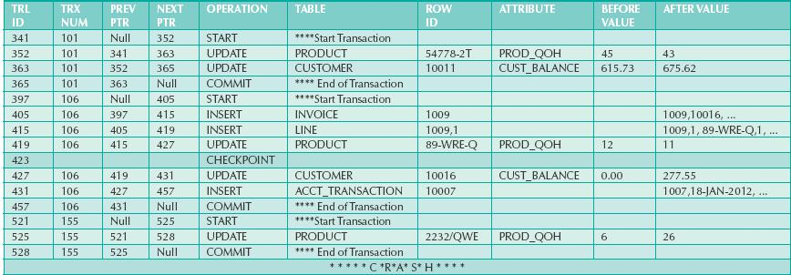
Using Table 10.15, you can now trace the database recovery process for a DBMS, using the deferred update method as follows:
1. Identify the last checkpoint—in this case, TRL ID 423. This was the last time database buffers were physically written to disk.
2. Note that transaction 101 started and finished before the last checkpoint. Therefore, all changes were already written to disk, and no additional action needs to be taken.
3. For each transaction committed after the last checkpoint (TRL ID 423), the DBMS will use the transaction log data to write the changes to disk, using the “after” values. For example, for transaction 106:
a. Find COMMIT (TRL ID 457).
b. Use the previous pointer values to locate the start of the transaction (TRL ID 397).
c. Use the next pointer values to locate each DML statement, and apply the changes to disk using the “after” values. (Start with TRL ID 405, then 415, 419, 427, and 431.) Remember that TRL ID 457 was the COMMIT statement for this transaction.
d. Repeat the process for transaction 155.
4. Any other transactions will be ignored. Therefore, for transactions that ended with ROLLBACK or that were left active (those that do not end with a COMMIT or ROLLBACK), nothing is done because no changes were written to disk.
 A transaction is a sequence of database operations that access the database. A transaction represents a real-world event, and it must be a logical unit of work; that is, no portion of the transaction can exist by itself. Either all parts are executed or the transaction is aborted. A transaction takes a database from one consistent state to another. A consistent database state is one in which all data integrity constraints are satisfied.
A transaction is a sequence of database operations that access the database. A transaction represents a real-world event, and it must be a logical unit of work; that is, no portion of the transaction can exist by itself. Either all parts are executed or the transaction is aborted. A transaction takes a database from one consistent state to another. A consistent database state is one in which all data integrity constraints are satisfied.
Transactions have four main properties: atomicity, consistency, isolation, and durability. Atomicity means that all parts of the transaction must be executed; otherwise, the transaction is aborted. Consistency means that the database’s consistent state is maintained, and isolation means that data used by one transaction cannot be accessed by another transaction until the first one is completed. Durability means that changes made by a transaction cannot be rolled back once the transaction is committed. In addition, transaction schedules have the property of serializability—the result of the concurrent execution of transactions is the same as that of the transactions being executed in serial order.
SQL provides support for transactions through the use of two statements: COMMIT, which saves changes to disk, and ROLLBACK, which restores the previous database state.
SQL transactions are formed by several SQL statements or database requests. Each database request originates several I/O database operations.
The transaction log keeps track of all transactions that modify the database. The information stored in the transaction log is used for recovery (ROLLBACK) purposes.
Concurrency control coordinates the simultaneous execution of transactions. The concurrent execution of transactions can result in three main problems: lost updates, uncommitted data, and inconsistent retrievals.
The scheduler is responsible for establishing the order in which the concurrent transaction operations are executed. The transaction execution order is critical and ensures database integrity in multiuser database systems. The scheduler uses locking, timestamping, and optimistic methods to ensure the serializability of transactions.
A lock guarantees unique access to a data item by a transaction. The lock prevents one transaction from using the data item while another transaction is using it. There are several levels of locks: database, table, page, row, and field.
Two types of locks can be used in database systems: binary locks and shared/exclusive locks. A binary lock can have only two states: locked (1) or unlocked (0). A shared lock is used when a transaction wants to read data from a database and no other transaction is updating the same data. Several shared or “read” locks can exist for a particular item. An exclusive lock is issued when a transaction wants to update (write to) the database and no other locks (shared or exclusive) are held on the data.
Serializability of schedules is guaranteed through the use of two-phase locking. The two-phase locking schema has a growing phase, in which the transaction acquires all of the locks that it needs without unlocking any data, and a shrinking phase, in which the transaction releases all of the locks without acquiring new locks.
When two or more transactions wait indefinitely for each other to release a lock, they are in a deadlock, also called a deadly embrace. There are three deadlock control techniques: prevention, detection, and avoidance.
Concurrency control with timestamping methods assigns a unique timestamp to each transaction and schedules the execution of conflicting transactions in timestamp order. Two schemes are used to decide which transaction is rolled back and which continues executing: the wait/die scheme and the wound/wait scheme.
Concurrency control with optimistic methods assumes that the majority of database transactions do not conflict and that transactions are executed concurrently, using private, temporary copies of the data. At commit time, the private copies are updated to the database.
Database recovery restores the database from a given state to a previous consistent state. Database recovery is triggered when a critical event occurs, such as a hardware error or application error.
ONLINE CONTENT
Flashcards and crossword puzzles for key term practice are available at www.cengagebrain.com.
1. Explain the following statement: a transaction is a logical unit of work.
2. What is a consistent database state, and how is it achieved?
3. The DBMS does not guarantee that the semantic meaning of the transaction truly represents the real-world event. What are the possible consequences of that limitation? Give an example.
4. List and discuss the five transaction properties.
5. What does serializability of transactions mean?
6. What is a transaction log, and what is its function?
7. What is a scheduler, what does it do, and why is its activity important to concurrency control?
8. What is a lock, and how does it work in general?
9. What are the different levels of lock granularity?
10. Why might a page-level lock be preferred over a field-level lock?
11. What is concurrency control, and what is its objective?
12. What is an exclusive lock, and under what circumstances is it granted?
13. What is a deadlock, and how can it be avoided? Discuss several strategies for dealing with deadlocks.
14. What are some disadvantages of time-stamping methods for concurrency control?
15. Why might it take a long time to complete transactions when using an optimistic approach to concurrency control?
16. What are the three types of database-critical events that can trigger the database recovery process? Give some examples for each one.
1. Suppose that you are a manufacturer of product ABC, which is composed of parts A, B, and C. Each time a new product ABC is created, it must be added to the product inventory, using the PROD_QOH in a table named PRODUCT. Also, each time the product is created, the parts inventory, using PART_QOH in a table named PART, must be reduced by one each of parts A, B, and C. The sample database contents are shown in the following tables.
TABLE NAME: PRODUCT | |
PROD_CODE | PROD_QOH |
ABC | 1,205 |
TABLE NAME: PART | |
PART_CODE | PART_QOH |
A | 567 |
B | 98 |
C | 549 |
Given the preceding information, answer Questions a through e.
a. How many database requests can you identify for an inventory update for both PRODUCT and PART?
b. Using SQL, write each database request you identified in Step a.
d. Write the transaction log, using Table 10.1 as your template.
e. Using the transaction log you created in Step d, trace its use in database recovery.
2. Describe the three most common problems with concurrent transaction execution. Explain how concurrency control can be used to avoid those problems.
3. What DBMS component is responsible for concurrency control? How is this feature used to resolve conflicts?
4. Using a simple example, explain the use of binary and shared/exclusive locks in a DBMS.
5. Suppose that your database system has failed. Describe the database recovery process and the use of deferred-write and write-through techniques.
ONLINE CONTENT
The Ch10_ABC_Markets database is available at www.cengagebrain.com. Use this database to provide solutions for Problems 6-11.
6. ABC Markets sell products to customers. The relational diagram shown in Figure P10.6 represents the main entities for ABC’s database. Note the following important characteristics:
• A customer may make many purchases, each one represented by an invoice.
• The CUS_BALANCE is updated with each credit purchase or payment and represents the amount the customer owes.
• The CUS_BALANCE is increased (+) with every credit purchase and decreased (–) with every customer payment.
• The date of last purchase is updated with each new purchase made by the customer.
• The date of last payment is updated with each new payment made by the customer.
• An invoice represents a product purchase by a customer.
• An INVOICE can have many invoice LINEs, one for each product purchased.
• The INV_TOTAL represents the total cost of the invoice, including taxes.
• The INV_TERMS can be “30,” “60,” or “90” (representing the number of days of credit) or “CASH,” “CHECK,” or “CC.”
• The invoice status can be “OPEN,” “PAID,” or “CANCEL.”
• A product’s quantity on hand (P_QTYOH) is updated (decreased) with each product sale.
• A customer may make many payments. The payment type (PMT_TYPE) can be one of the following:
• “CASH” for cash payments
• “CHECK” for check payments
• “CC” for credit card payments
• The payment details (PMT_DETAILS) are used to record data about check or credit card payments:
• The bank, account number, and check number for check payments
• The issuer, credit card number, and expiration date for credit card payments
FIGURE P10.6 The ABC Markets relational diagram
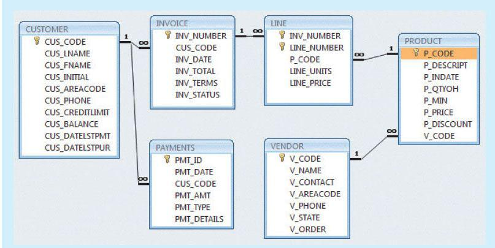
SOURCE: Course Technology/Cengage Learning
Note: Not all entities and attributes are represented in this example. Use only the attributes indicated.
Using this database, write the SQL code to represent each of the following transactions. Use BEGIN TRANSACTION and COMMIT to group the SQL statements in logical transactions.
a. On May 11, 2012, customer 10010 makes a credit purchase (30 days) of one unit of product 11QER/31 with a unit price of $110.00; the tax rate is 8 percent. The invoice number is 10983, and this invoice has only one product line.
b. On June 3, 2012, customer 10010 makes a payment of $100 in cash. The payment ID is 3428.
7. Create a simple transaction log (using the format shown in Table 10.14) to represent the actions of the transactions in Problems 6a and 6b.
8. Assuming that pessimistic locking is being used but the two-phase locking protocol is not, create a chronological list of the locking, unlocking, and data manipulation activities that would occur during the complete processing of the transaction described in Problem 6a.
9. Assuming that pessimistic locking is being used with the two-phase locking protocol, create a chronological list of the locking, unlocking, and data manipulation activities that would occur during the complete processing of the transaction described in Problem 6a.
10. Assuming that pessimistic locking is being used but the two-phase locking protocol is not, create a chronological list of the locking, unlocking, and data manipulation activities that would occur during the complete processing of the transaction described in Problem 6b.
11. Assuming that pessimistic locking with the two-phase locking protocol is being used with row-level lock granularity, create a chronological list of the locking, unlocking, and data manipulation activities that would occur during the complete processing of the transaction described in Problem 6b.
1 The term monotonicity is part of the standard concurrency control vocabulary. The authors’ first introduction to this term and its proper use was in an article written by W. H. Kohler, “A Survey of Techniques for Synchronization and Recovery in Decentralized Computer Systems,” Computer Surveys 3(2), June 1981.
2 The procedure was first described by R. E. Stearnes and P. M. Lewis II in “System-level Concurrency Control for Distributed Database Systems,” ACM Transactions on Database Systems, No. 2, June 1978.
3 The optimistic approach to concurrency control is described in an article by H. T. King and J. T. Robinson, “Optimistic Methods for Concurrency Control,” ACM Transactions on Database Systems 6(2), June 1981. Even the most current software is built on conceptual standards that were developed more than two decades ago.